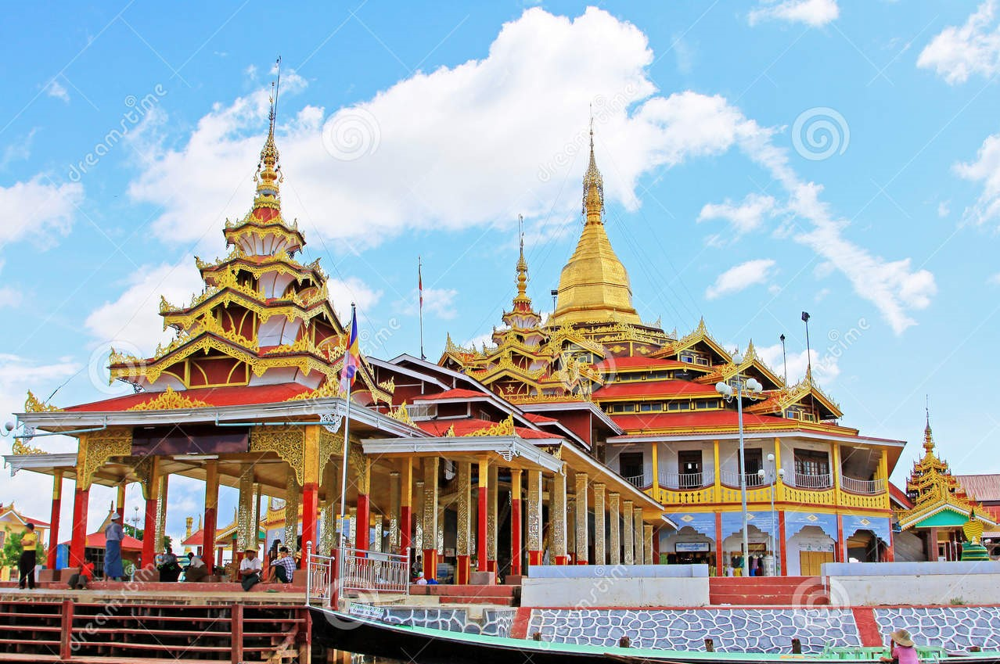

Welcome from SMT Travel Agency! Our office is in Yangon and Inle. SMT agency's main travel service is converyance to all parts of inexpensive reasonbly priced. The price is appropriate, so if you want to visit the Inle to relax alone {or}with family members, and friends remember our agency instandly. I am believe you will be merry.
Now we will introduce you to the places we will take you to:
Inle is not only the second largest lake in Myanmar (covering roughly 45 square miles in a beautiful and remote, mountainous area of the Shan State), but the Inle basin represents an entire region. One could spend a week exploring the lake, villages, and nearby towns and sights such as Kakku and Kalaw, and still only scratch the surface. For many of our past travelers, Inle was a highlight of their trip, particularly during the festival season (September through January) and we'll encourage you to spend time there as well. Read more>>>
|  |
|
|
The Phaung Daw Oo pagoda is the most highly revered monastery in the Inle Lake area. It houses five ancient images of the Buddha that are completely covered in golf leaf. The pagoda is easily reached by boat from Inle Lake; in front of the building is a landing pier. At the center of the monastery building is a golden stupa topped with an ornamental hti. The interior walls of the temple are decorated with murals depicting Buddhist stories. Read more>>>
It’s fun to go to the village that in Inlay. You can study how Inlay people are working, living and changing also you can know how the Inlay lack is changing really well or not at there. I’ve heard it before like people call Inlay cause of that four village they are Nam Pan village , Wan Lon , Naung Taw and Yine Ya. While visiting, you will be able to learn the different business of inlay lake. You can also go and visit into the factory directly which are traditional cotton business, the place where produce handmade clothes . By the way when you’re visiting you can also buy their traditional handmade clothes, pa soe, hta mein, shirt, towel , scarf and other kind of things for souvenirs to your home. In Inlay also silversmith work is one of the famous business too.
 Carb heaven(otherwise known as Shan noodle salad) |
Chickpea tofu soup (Tofu Nway) |
 Khaw Pote |
|
A row of local-style barbecue, noodle and curry shops is located down a narrow lane behind Yone Gyi at the same level as the market (so between the continuation of Lang Ma Taw and Mingalar streets.) There’s a string of around 10 adjacent eateries – all very simple - and which seem to alternate between pick your own curry or choose your own barbecue selection. Though it’s often referred to as the town’s night market the earliest stalls open around midday, closing between 21:00 to 22:00. You’ll get a good fill here for 1,500-2,500 kyat and beer is available. |
Chickpea tofu soup(Tofu Nway) is one of the popular breakfast which can be found mostly in Shan State.i people. you will also see many food recipes which are popular in Shan State like Shan noodles and many more. The rich thick tofu soup or chickpea gravy noodle is prepared by mixing soft creamy tofu paste with rice noodles and served with garnishing like sesame seeds, garlic oil and spring onions. Tofu nway is usually preferred for breakfast in Shan State but one can enjoy it at any time of the day. Due to the tofu paste, it is a filling and satisfying meal. |
Khaw Poat is a kind of appetizing snack of the Shan national race, who lives in the Southern part of the Shan State. Khaw Poat is not only a popular snack for the Shan nationals, but also for all nationals. We can easily eat Khaw Poat by frying or roasting it. Khaw Poat is more delicious if you eat with roasted and pounded sesame, and brown slab sugar. And you can also eat Khaw Poat only without mixing with other ingredients. Khaw Poat is really tasty for us unfried or unroasted and recently pounded. If we make Khaw Poat we need black and white sticky rice, pounded sesame and brown slab sugar. First, we have to pound the black sticky rice, until soft and tender. |
This is a website about Inle = website
.jpg)
|
Pristine Lotus Resort is situated at Inle Lake, in the majestic country of Myanmar. Pristine Lotus Resort takes full advantage of its lake side setting. The design of the 49 private villas allows for privacy and luxury amongst a tropical landscape that is forest with breezes and open to inspiring, endless views of the lush valley. Positioned at a rare vantage point, Pristine Lotus Resort’s main facilities and villas are gracefully laid out over a landscaped hillside that gently slopes into the lake and the Shan hills beyond.
Here you can also see the beauty of the Inle.